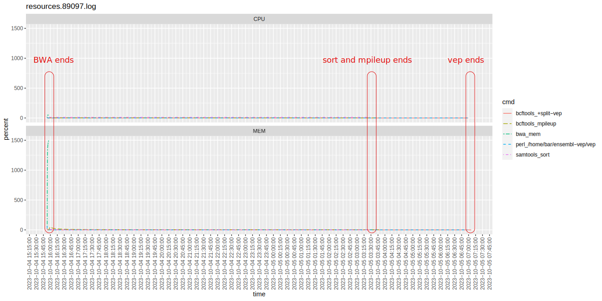
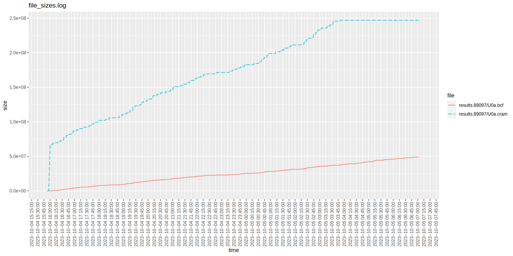

NGS one-liner to call variants
1. Introduction
We can sequence genomes chunk by chunk. This sequencing creates millions of these “short reads” which we need to assembly back into a genome or align back to a reference if we already done the assembly before. There are different approaches to both of this and this post concerned with the latter.
This process is performed by various tools and in many steps with a lot of commands. There have been a lot of work put in to making this process more streamlined with workflow managers. This is not one of them. Purpose of this exercise is to investigate shell pipes and is purely educational.
It is made for capture/amplicon short read sequencing in mind for human DNA and tested with reference exome sequencing data described here. As I start building and testing the pipeline I had a few problems as well as questions but first lets look at the command itself.
2. One-liner
2. One-liner
2.1. Pipeline
<<oneliner>>
2.2. Breakdown
- Preprocessing fastq
[BROKEN LINK: fastp] with the
--stdoutparameter writes interleaved output. We are just using default operations. Because of different results its commented out and not being used. - Alignment
[BROKEN LINK: bwa] can take interleaved input from stdin with `-p` option. This was used to get the input from fastp stdout. We are just starting from bwa by giving the both fastq files as inputs.
- Processing aligned reads
Samtools [BROKEN LINK: samtools_collate], [BROKEN LINK: samtools_fixmate], [BROKEN LINK: samtools_sort], [BROKEN LINK: samtools_markdup] submodules are used. We use samtools to mark duplicate reads. http://www.htslib.org/doc/samtools-markdup.html [BROKEN LINK: samtools_markdup] has a conditional check beforehand for a variable named
AMPLICONwhich if true skips the markdup and just cats the alignments. - Writing out the alignment file
[BROKEN LINK: samtools_view] is used to convert the bam file to cram. We can use [BROKEN LINK: tee_cram] to write out the cram file while passing it down the pipeline.
- Variant calling
[BROKEN LINK: bcftools_mpileup] has
-d 10000 -L 10000parameters in case there are high depth amplicon sequencing. Beware the 4.4 commands before the [BROKEN LINK: bcftools_call]. - Post processing variants
Check out this section to understand rationale behind this [BROKEN LINK: bcftools_view] command. Variant normalization is performed by [BROKEN LINK: bcftools_norm]. In [BROKEN LINK: bcftools_fill-tags] command the specific tag I need is the variant allele fraction (VAF). We later use the VAF with [BROKEN LINK: bcftools_setGT_1] and [BROKEN LINK: bcftools_setGT_2] commands.
We are using -Ov [BROKEN LINK: bcftools_setGT_2] because I had problem with VEP reading compressed from stdin. https://github.com/Ensembl/ensembl-vep/issues/1502
- annotating variants
A bare bone [BROKEN LINK: vep] command. This brings a lot of annotation with the
--everything=flag. - filtering variants
Here we use [BROKEN LINK: split-vep_1] and add some of the columns we’re interested in into the INFO column before filtering. Filtering expressions depends on what we’re trying to achieve, I just put the ones I like. [BROKEN LINK: filter_OnTarget] [BROKEN LINK: filter_LowQual] [BROKEN LINK: filter_Freq] [BROKEN LINK: filter_Impact] [BROKEN LINK: filter_HomRare] [BROKEN LINK: filter_HetNovel]
Here no variant is excluded but the tags we give with the
-sparameters are appended to theFILTERcolumn. After the filtering we [BROKEN LINK: tee_bcf] with theteecommand. - writing out a tsv file
3. Results and highlights
As result this report is created with multiqc. It would be better make a hard filtered vcf and create the report that one but since this test already has small number of variants it wasn’t required.
- Test the command by running it multiple times.
- Count the data in intermediary steps (md5sum, mapped and paired reads, number of variants etc.).
4. Auxiliary tasks and Embellishments
4.1. setting up the environment
These are the variable we later use in the pipeline. We can change [BROKEN LINK: R1] and [BROKEN LINK: R2] and sample for changing the input. We can edit columns to customize the output.
Assembly is used in the [BROKEN LINK: vep] command and if we want to use GRCh37 we need to install the GRCh37 cache and also need to change the reference genome.
BASEDIR=$(dirname "$(realpath "$0")") THREADS=16 ASSEMBLY="GRCh38" REFERENCE="$HOME/reference/GRCh38/Homo_sapiens_assembly38.fasta" TARGET="$HOME/reference/GRCh38/hg38.refGene.exon.bed" AMPLICON="NO" R1="$HOME/sample/U0a_CGATGT_L001_R1_005.fastq.gz" R2="$HOME/sample/U0a_CGATGT_L001_R2_005.fastq.gz" SAMPLE="U0a" OUTPUT_DIR="results.$$" OUTPUT="$OUTPUT_DIR/$SAMPLE" columns="[%SAMPLE]\t%CHROM\t%POS\t%REF\t%ALT\t%ID\t%FILTER[\t%GT\t%VAF\t%AD\t%DP]\t%Consequence\t%IMPACT\t%SYMBOL\t%Feature\t%EXON\t%INTRON\t%HGVSc\t%HGVSp\t%cDNA_position\t%CDS_position\t%Protein_position\t%Amino_acids\t%Codons\t%Existing_variation\t%MANE_SELECT\t%MANE_PLUS_CLINICAL\t%GENE_PHENO\t%SIFT\t%PolyPhen\t%DOMAINS\t%AF\t%gnomADe_AF\t%gnomADg_AF\t%MAX_AF\t%MAX_AF_POPS\t%CLIN_SIG\t%PHENO\t%PUBMED\t%CANONICAL\n" header=$(echo "$columns" | sed "s/%//g;s/\[//g;s/\]//g") mkdir -p "$OUTPUT_DIR" cp "$0" "$OUTPUT_DIR"
Here we copy the script to result directory to log the command we are running.
4.2. software versions
Multiqc can show these in a neat table. We just need some formating.
{ │ printf 'oneliner: "%s"\n' "$VERSION"; │ printf 'fastp: "%s"\n' "$(fastp 2>&1 | grep version | cut -d " " -f 2)" │ printf 'bwa: "%s"\n' "$(bwa 2>&1 | grep Version | cut -d: -f2)" │ printf 'samtools: "%s"\n' "$(samtools version | sed 1q | cut -d " " -f 2)" │ printf 'bcftools: "%s"\n' "$(bcftools version | sed 1q | cut -d " " -f 2)" │ printf 'ensembl-vep: "%s"\n' "$(~/ensembl-vep/vep | grep ensembl-vep | cut -d : -f 2)" │ printf 'bedtools: "%s"\n' "$(bedtools --version | cut -d " " -f2)" │ ( │ │ echo "annotation_sources:" │ │ ~/ensembl-vep/vep --show_cache_info | sed 's/\s/: "/;s/$/"/;s/^/ /' │ ) } > "$OUTPUT_DIR"/oneliner_mqc_versions.yaml
4.3. Getting the stats and creating reports
IGV-reports create easy to browse variant list with alignments. We can add this html to our final html report. At last the multiqc brings all together with custom plots and software versions.
samtools index -@ $THREADS "$OUTPUT.cram" bcftools index "$OUTPUT.bcf" . ~/venv/bin/activate create_report "$OUTPUT".bcf \ │ http://igv-genepattern-org.s3.amazonaws.com/genomes/seq/hg38/hg38.fa \ │ --genome hg38 --flanking 1000 \ │ --sample-columns GT AD DP VAF \ │ --info-columns SYMBOL gnomADg_AF IMPACT Existing_variation \ │ --tracks "$OUTPUT".cram --output "$OUTPUT"_mqc.html │ samtools stats --reference "$REFERENCE" "$OUTPUT.cram" >"$OUTPUT.cram.stats" samtools idxstats "$OUTPUT.cram" >"$OUTPUT.cram.idxstats" samtools flagstat "$OUTPUT.cram" >"$OUTPUT.cram.flagstat" bcftools stats "$OUTPUT.bcf" >"$OUTPUT.bcf.stats" "$BASEDIR"/plot_resource_usage.R "$OUTPUT_DIR" multiqc -f -s -o "$OUTPUT_DIR" "$OUTPUT_DIR"
4.4. pv
[BROKEN LINK: pv] is a command line utility that can show a progress bar as data pipe through it.
In its manual it uses -s (size) option with `du` command, in our case since our data is compressed we use `gzip -l`.
After the first `pv`, it is harder to find out the amount of data passing through so others won’t be accurate but it can still be used to show how much time is passed. Its -S parameter should not be used since it will stop the input prematurely.
They’re commented out because my shell acts weird after the command finishes.
4.5. Monitoring the resource usage
We can start this process in background before the pipeline starts. This gets cpu, memory percentages with `ps` command and file sizes with `du` command every 5 seconds.
monitor_resources() { │ while ps $$ >/dev/null; do │ │ du -b $OUTPUT_DIR/* | sed "s#^#$(date +%Y/%m/%d/%H:%M:%S) #" >>"$OUTPUT_DIR/file_sizes.$$.log" │ │ ps --ppid $$ --forest --no-heading -o %cpu,%mem,cmd 2>/dev/null | │ │ │ cut -d " " -f 1-6 | │ │ │ sed "s#^#$(date +%Y/%m/%d/%H:%M:%S) #" | │ │ │ grep -v "CMD\|pv\|ps" | │ │ │ awk '{print $4"_"$5"\t"$1"\t"$2"\t"$3}' >>"$OUTPUT_DIR/resources.$$.log" │ │ sleep 5 │ done } monitor_resources &
4.5.1. Plotting the resource usage and file sizes
This script creates the resource usage file sizes plots using the metrics created at above section. These images can later be included in the multiqc report.
Details
library(ggplot2) args = commandArgs(trailingOnly=TRUE) if (length(args)==0) { │ run_dir <- "." } else if (length(args)==1) { │ run_dir <- args[1] } num_x_ticks <- 66 plot_resource_usage <- function(log_path) { │ data <- read.table(log_path) │ mem <- data[c("V1", "V2", "V4")] │ mem$V5 <- "MEM" │ cpu <- data[c("V1", "V2", "V3")] │ cpu$V5 <- "CPU" │ │ colnames(mem) <- c("cmd", "time", "percent", "type") │ colnames(cpu) <- c("cmd", "time", "percent", "type") │ │ data <- rbind(cpu, mem) │ │ major_tasks <- c( │ "bwa_mem", │ "samtools_sort", │ "bcftools_mpileup", │ "samtools_markdup", │ "vep" │ ) │ data <- data[grepl(paste(major_tasks, collapse = "|"), data$cmd), ] │ │ data$time <- as.POSIXct(data$time, format = "%Y/%m/%d/%H:%M:%S") │ │ date_breaks <- paste( │ signif( │ │ as.numeric( │ │ difftime(max(data$time), min(data$time), units = "secs") / num_x_ticks │ │ ), │ │ 2 │ ), │ "sec" │ ) │ │ ggplot( │ data, │ aes(x = time, y = percent, color = cmd, group = cmd, linetype = cmd) │ ) + │ facet_wrap(~type, nrow = 2, scales="free_y") + │ geom_line() + │ theme(axis.text.x = element_text(angle = 90, vjust = 0.5, hjust = 1)) + │ ggtitle(log_path) + │ scale_linetype_manual(values = rep(c( │ │ "solid", "longdash", "twodash", │ │ "dashed", "dotdash", "dotted", "solid" │ ), 3)) + │ scale_x_datetime(date_breaks = date_breaks) } plot_file_sizes <- function(log_path) { │ num_x_ticks <- 67 │ data <- read.table(log_path) │ colnames(data) <- c("time", "size", "file") │ data$time <- as.POSIXct(data$time, format = "%Y/%m/%d/%H:%M:%S") │ │ major_files <- c("cram$", "bcf$", "tsv$") │ │ data <- data[grepl(paste(major_files, collapse = "|"), data$file), ] │ │ date_breaks <- paste( │ signif( │ │ as.numeric( │ │ difftime(max(data$time), min(data$time), units = "secs") / num_x_ticks │ │ ), │ │ 2 │ ), │ "sec" │ ) │ │ ggplot( │ data, │ aes(x = time, y = size, color = file, group = file, linetype = file) │ ) + │ geom_line() + │ theme(axis.text.x = element_text(angle = 90, vjust = 0.5, hjust = 1)) + │ ggtitle(log_path) + │ scale_linetype_manual( │ │ values = rep(c( │ │ "solid", "longdash", "twodash", │ │ "dashed", "dotdash", "dotted", "solid" │ │ ), 3) │ ) + │ scale_x_datetime(date_breaks = date_breaks) } my_files <- list.files(path = run_dir, pattern = "^resources.*\\.log$", full.names = T) for (i in my_files) { │ plot_resource_usage(i) │ ggsave(paste(i, "_mqc.png", sep = ""), width = 14, height = 7) } my_files <- list.files(path = run_dir, pattern = "^file_sizes.*\\.log$", full.names = T) for (i in my_files) { │ plot_file_sizes(i) │ ggsave(paste(i, "_mqc.png", sep = ""), width = 14, height = 7) }
5. Running and testing the pipeline
Each tool of the pipe should be tested individually and commands parameters should be given attention in detail. In particular, samtools’ stdin and stdout can be tricky to get right in the first try.
Comparing the output created running the commands in distinct steps and as pipe makes sure pipeline itself not causing any side effects.
Running the pipeline multiple times is also an indispensable test to make sure it is reliable.
I noticed different variant counts in earlier tests because of the wrong parameter of pv (I used -S that would end the buffer prematurely).
I did the initial setting up and making sure that pipeline runs with super small subset of the FASTQ files.
zcat U0a_CGATGT_L001_R1_005.fastq.gz | sed 200q > Test_CGATGT_L001_R1_005.fastq.gz zcat U0a_CGATGT_L001_R2_005.fastq.gz | sed 200q > Test_CGATGT_L001_R2_005.fastq.gz
I did the test runs ten at a time.
cd /home/bar/runs/
for i in {1..10}; do ../oneliner.sh; done
5.1. Should this be a single pipeline?
I would assume no. We have random reads coming from the fastq file and we should wait for alignment process to complete before going on with the variant calling. However, this doesn’t happen because I assume `samtools sort` buffers the whole thing while sorting.
While testing with a smaller subset running in pipe and distinct steps gives the same number of resulting variants. However, when we remove the `samtools sort` I got no variants which in concordance with my initial hunch. This would need more thorough testing to be sure like showing bwa and bcftools running at the same time (but i didn’t keep those stats).
bar@debiantestin:~/runs$ ls -1 results.*/Test.*.bcftools.log | xargs grep '^Lines' Seperate Steps results.234225/Test.234225.bcftools.log:Lines total/split/joined/realigned/skipped: 20/0/0/0/0 Pipe no samtools sort results.235225/Test.235225.bcftools.log:Lines total/split/joined/realigned/skipped: 0/0/0/0/0 Pipe results.70416/Test.70416.bcftools.log:Lines total/split/joined/realigned/skipped: 20/0/0/0/0
5.2. Why is it taking too long?
This is not a pipe related concern but after setting up the pipe and running with relatively larger data which is still around 500Mb it took 15 hours.


BWA completes about less than 10 minutes. In this time the first chunk of the alignments are written about 60-70 Mb, then alignments are written incrementally until sort and mpileup finishes.
Investigating further I found we are calling anything and everything; half a million variants in the file. Target intervals only includes 13007 of them which only 7 has depth and quality bigger than 5.
bar@debiantestin:~/runs/results.89097$ bcftools view U0a.bcf -H | wc -l 532845 bar@debiantestin:~/runs/results.89097$ bcftools view U0a.bcf -i 'FORMAT/DP>1' -H | wc -l 70674 bar@debiantestin:~/runs/results.89097$ bcftools view U0a.bcf -i 'FORMAT/DP>20' -H | wc -l 2408 bar@debiantestin:~/runs/results.89097$ bcftools view U0a.bcf -i 'FORMAT/DP>20&&QUAL>20' -H | wc -l 2080 bar@debiantestin:~/runs/results.89097$ bcftools view U0a.bcf -i 'FORMAT/DP>20&&QUAL>100' -H | wc -l 1288 bar@debiantestin:~/runs/results.89097$ bcftools view U0a.bcf -H -T /home/bar/reference/GRCh38/hg38.refGene.exon_padding.bed |wc -l 13007 bar@debiantestin:~/runs/results.89097$ bcftools view U0a.bcf -i 'FORMAT/DP>5&&QUAL>5' -H -T /home/bar/reference/GRCh38/hg38.refGene.exon_padding.bed |wc -l 7
After filtering for target region and the depth and quality we get it down to 15 minutes. For some reason target region overlaps low quality variants.
How much of the variants filtered effects the time it tooks to complete the pipeline. Biggest time concern after eliminating variant count would be the VEP. It takes around ~15 mins to annote 7 variants. Runing the VEP by itself takes only around 15 secs. Meaning there are some other bottlenecks.
We utilize more of the system resources passing around the $THREADS variable but it would be more interesting challenge to scale this pipeline horizontally.
5.3. Different number of variants
bwa mem -t "$THREADS" -R "@RG\tID:$SAMPLE\tSM:$SAMPLE\tPL:illumina\tLB:lib1\tPU:foo" "$REFERENCE" "$R1" "$R2" 2>"$OUTPUT.$$.bwa.log" > "$OUTPUT.sam" │ # pv -cN bwa | samtools collate -@ "$THREADS" -o "$OUTPUT.collated.bam" "$OUTPUT.sam" samtools fixmate -@ "$THREADS" -m "$OUTPUT.collated.bam" "$OUTPUT.fixmate.bam" samtools sort -@ "$THREADS" "$OUTPUT.fixmate.bam" -o "$OUTPUT.sorted.bam" -O bam samtools markdup -@ "$THREADS" "$OUTPUT.sorted.bam" "$OUTPUT.markdup.bam" │ # ([ "$AMPLICON" = "NO" ] && samtools markdup -@ "$THREADS" - - || cat) | │ # pv -cN samtools_markdup | │ bcftools mpileup --threads "$THREADS" -Ou -A -T "$TARGET" -d 10000 -L 10000 -a "FORMAT/AD,FORMAT/DP" -f "$REFERENCE" "$OUTPUT.markdup.bam" 2>>"$OUTPUT.$$.bcftools.log" |
Disassembled commands. tee can also be used.
Even after going through this section I had different number of variants while running the pipeline. It would result in 6, 7 or 8 variants in every ten batches of my test runs. Debuging this was like disassembling an engine and testing each part individually. Variants are counted by [BROKEN LINK: bcftools_norm] step. So whatever was happening before this step. I worked my way up the ladder.
I had 10 different runs with various number of variants. I first make sure [BROKEN LINK: bcftools_mpileup] and [BROKEN LINK: bcftools_call] worked correctly by running it ten times for different number of variant called runs. It produced the same output from every time whether it was 6, 7 or 8 variants. So it was something upstream.
I separated each command before and checked the stats.
for bam in $(find -type f -name "*.*am"); do echo $bam; samtools stats $bam > $bam.stats; done find -type f -name "*.stats" | xargs grep -Ri "reads mapped and paired"
./results.148485/U0a.sorted.bam.stats:SN reads mapped and paired: 4229234 # paired-end technology bit set + both mates mapped ./results.148485/U0a.markdup.bam.stats:SN reads mapped and paired: 4229234 # paired-end technology bit set + both mates mapped ./results.148485/U0a.sam.stats:SN reads mapped and paired: 4229234 # paired-end technology bit set + both mates mapped ./results.148485/U0a.collated.bam.stats:SN reads mapped and paired: 4229234 # paired-end technology bit set + both mates mapped ./results.148485/U0a.fixmate.bam.stats:SN reads mapped and paired: 4229234 # paired-end technology bit set + both mates mapped ./results.159805/U0a.sorted.bam.stats:SN reads mapped and paired: 4229234 # paired-end technology bit set + both mates mapped ./results.159805/U0a.markdup.bam.stats:SN reads mapped and paired: 4229234 # paired-end technology bit set + both mates mapped ./results.159805/U0a.sam.stats:SN reads mapped and paired: 4229234 # paired-end technology bit set + both mates mapped ./results.159805/U0a.collated.bam.stats:SN reads mapped and paired: 4229234 # paired-end technology bit set + both mates mapped ./results.159805/U0a.fixmate.bam.stats:SN reads mapped and paired: 4229234 # paired-end technology bit set + both mates mapped ./results.155247/U0a.sorted.bam.stats:SN reads mapped and paired: 4229236 # paired-end technology bit set + both mates mapped ./results.155247/U0a.markdup.bam.stats:SN reads mapped and paired: 4229236 # paired-end technology bit set + both mates mapped ./results.155247/U0a.sam.stats:SN reads mapped and paired: 4229236 # paired-end technology bit set + both mates mapped ./results.155247/U0a.collated.bam.stats:SN reads mapped and paired: 4229236 # paired-end technology bit set + both mates mapped ./results.155247/U0a.fixmate.bam.stats:SN reads mapped and paired: 4229236 # paired-end technology bit set + both mates mapped ./results.150020/U0a.sorted.bam.stats:SN reads mapped and paired: 4229234 # paired-end technology bit set + both mates mapped ./results.150020/U0a.markdup.bam.stats:SN reads mapped and paired: 4229234 # paired-end technology bit set + both mates mapped ./results.150020/U0a.sam.stats:SN reads mapped and paired: 4229234 # paired-end technology bit set + both mates mapped ./results.150020/U0a.collated.bam.stats:SN reads mapped and paired: 4229234 # paired-end technology bit set + both mates mapped ./results.150020/U0a.fixmate.bam.stats:SN reads mapped and paired: 4229234 # paired-end technology bit set + both mates mapped ./results.162839/U0a.sorted.bam.stats:SN reads mapped and paired: 4229234 # paired-end technology bit set + both mates mapped ./results.162839/U0a.markdup.bam.stats:SN reads mapped and paired: 4229234 # paired-end technology bit set + both mates mapped ./results.162839/U0a.sam.stats:SN reads mapped and paired: 4229234 # paired-end technology bit set + both mates mapped ./results.162839/U0a.collated.bam.stats:SN reads mapped and paired: 4229234 # paired-end technology bit set + both mates mapped ./results.162839/U0a.fixmate.bam.stats:SN reads mapped and paired: 4229234 # paired-end technology bit set + both mates mapped ./results.156764/U0a.sorted.bam.stats:SN reads mapped and paired: 4229234 # paired-end technology bit set + both mates mapped ./results.156764/U0a.markdup.bam.stats:SN reads mapped and paired: 4229234 # paired-end technology bit set + both mates mapped
samtools outputs where consistent in itself as it showed same counts in each run but 155247 in particular had totally different counts. Pointing there was something before or during the alignment.
Next I checked the fastq files produced by fastp.
│find -type f -name "*.fq.gz" | xargs md5sum
a90dd1e71c9e5432e8b67a54e65424a1 ./results.148485/U0a.fq.gz a90dd1e71c9e5432e8b67a54e65424a1 ./results.159805/U0a.fq.gz 8f716b9f65748efdb3f30ba7d7794d4d ./results.155247/U0a.fq.gz a90dd1e71c9e5432e8b67a54e65424a1 ./results.150020/U0a.fq.gz a90dd1e71c9e5432e8b67a54e65424a1 ./results.162839/U0a.fq.gz 8b4619fd39555cee4d5cca430d999379 ./results.156764/U0a.fq.gz 8b4619fd39555cee4d5cca430d999379 ./results.153722/U0a.fq.gz a90dd1e71c9e5432e8b67a54e65424a1 ./results.158278/U0a.fq.gz a90dd1e71c9e5432e8b67a54e65424a1 ./results.151555/U0a.fq.gz a90dd1e71c9e5432e8b67a54e65424a1 ./results.161314/U0a.fq.gz
It creates three different outputs. Searching the github I found related issues: https://github.com/OpenGene/fastp/issues/506. Removing the fastp step gave the consistent alignment and variant call results.
Appendix I: The one-liner in one line
Marquee element support is deprecated so there is a custom javascript.
You can stop by clicking here.div
bwa mem -t "$THREADS" -R "@RG\tID:$SAMPLE\tSM:$SAMPLE\tPL:illumina\tLB:lib1\tPU:foo" "$REFERENCE" "$R1" "$R2" 2>"$OUTPUT.$$.bwa.log" | samtools collate -@ "$THREADS" -O - | samtools fixmate -@ "$THREADS" -m - - | samtools sort -@ "$THREADS" - 2>"$OUTPUT.$$.samtools.log" | ([ "$AMPLICON" = "NO" ] && samtools markdup -@ "$THREADS" - - || cat) | samtools view -C -T "$REFERENCE" - | tee "$OUTPUT.cram" | bcftools mpileup --threads "$THREADS" -Ou -A -T "$TARGET" -d 10000 -L 10000 -a "FORMAT/AD,FORMAT/DP" -f "$REFERENCE" - 2>>"$OUTPUT.$$.bcftools.log" | bcftools call --threads "$THREADS" -Ou --ploidy "$ASSEMBLY" -mv | bcftools view -i 'FORMAT/DP>5&&QUAL>5' | bcftools norm --threads "$THREADS" -Ou -m-any --check-ref w -f "$REFERENCE" 2>>"$OUTPUT.$$.bcftools.log" | bcftools +fill-tags -Ou -- -t all 2>>"$OUTPUT.$$.bcftools.log" | bcftools +setGT -Ou -- -t q -n c:'0/1' -i 'VAF>=.1' 2>>"$OUTPUT.$$.bcftools.log" | bcftools +setGT -Ov -- -t q -n c:'1/1' -i 'VAF>=.75' 2>>"$OUTPUT.$$.bcftools.log" | /home/bar/ensembl-vep/vep --everything --force_overwrite --vcf --pick --format vcf --fork $THREADS --stats_file "$OUTPUT"_summary.html --warning_file "$OUTPUT"_warnings.txt --output_file STDOUT --cache 2>"$OUTPUT.$$.vep.log" | bcftools +split-vep -c SYMBOL,gnomADg_AF:Float,IMPACT,Existing_variation 2>>"$OUTPUT.$$.bcftools.log" | bcftools filter --threads "$THREADS" -Ou -m+ -s 'onTarget' -M "$TARGET" | bcftools filter --threads "$THREADS" -Ou -m+ -s 'lowQual' -g3 -G10 -e 'FORMAT/DP<=15 || QUAL<=20' | bcftools filter --threads "$THREADS" -Ou -m+ -s 'highFreq' -e 'gnomADg_AF>0.001' | bcftools filter --threads "$THREADS" -Ou -m+ -s 'lowIMPACT' -i 'IMPACT~"HIGH" || IMPACT~"MODERATE"' | bcftools filter --threads "$THREADS" -Ou -m+ -s 'HOMrare' -e 'GT="1/1" && (gnomADg_AF <= 0.001 || (Existing_variation="." && gnomADg_AF="." && ID="."))' | bcftools filter --threads "$THREADS" -Ob -m+ -s 'HETnovel' -e 'GT="0/1" && Existing_variation="." && gnomADg_AF="." && ID="."' | tee "$OUTPUT.bcf" | bcftools +split-vep -f "$columns" -d -i 'CANONICAL~"YES"' 2>>"$OUTPUT.$$.bcftools.log" | awk -v header="$header" 'BEGIN {printf header} 1' | gzip -c >"$OUTPUT.tsv.gz"
Appendix II: Setting up tools and data
We are going to need fastqc, fastp, bwa, samtools, bcftools, tabix, bedtools, ensembl-vep and multiqc. I created small scripts with dependencies as I was trying to create containers with some of them. Some of them are just installed from debian repos.
- fastqc bedtools tabix
apt update -y apt install -y fastqc tabix bedtools
- ggplot2
Debian packages lots of R packages so we don’t have to compile it.
apt update -y apt install -y r-cran-ggplot2
- multiqc and igv-reports
Debian also packages multiqc but it is version 1.4 which doesn’t have software version or custom image module we are using. In order to get the latest version of multiqc we need to spin up a virtual environment. IGV-reports is also a python package we can use the same environment while installing.
apt update -y apt install -y python3-virtualenv virtualenv -p python3 venv source venv/bin/activate pip install -U multiqc igv-reports - fastp
apt update -y apt install -y wget wget http://opengene.org/fastp/fastp -O /usr/bin/fastp chmod a+x /usr/bin/fastp - BWA
apt update -y apt install -y git gcc zlib1g-dev make git clone https://github.com/lh3/bwa cd bwa make cp ./bwa /usr/local/bin/ cd .. rm -rf bwa
- samtools
apt update -y apt install -y \ │ git gcc zlib1g-dev autoconf make \ │ liblzma-dev libbz2-dev libcurl4-openssl-dev git clone --recurse-submodules https://github.com/samtools/htslib.git git clone https://github.com/samtools/samtools cd samtools autoheader autoconf -Wno-syntax ./configure --without-curses make make install cd .. rm -rf samtools rm -rf htslib
- bcftools
apt update -y apt install -y \ │ git gcc zlib1g-dev autoconf make \ │ liblzma-dev libbz2-dev libperl-dev \ │ libgsl-dev libcurl4-openssl-dev git clone --recurse-submodules https://github.com/samtools/htslib.git git clone https://github.com/samtools/bcftools cd bcftools autoheader && autoconf && ./configure --enable-libgsl --enable-perl-filters make make install cd .. rm -rf bcftools rm -rf htslib
- ensembl-vep
Installing the vep cache takes time…
apt install -y \ │ zlib1g-dev libbz2-dev liblzma-dev gcc \ │ libmodule-build-perl libjson-perl libdbi-perl \ │ libset-intervaltree-perl build-essential make \ │ automake git unzip autoconf libdbd-mysql-perl \ │ git clone https://github.com/Ensembl/ensembl-vep.git cd ensembl-vep perl INSTALL.pl -a acf -s homo_sapiens -y GRCh38 (vep_install)
- downloading the reference genome
apt update -y apt install -y wget cd mkdir -p reference/GRCh38 cd reference/GRCh38 wget https://storage.googleapis.com/genomics-public-data/resources/broad/hg38/v0/Homo_sapiens_assembly38.dict wget https://storage.googleapis.com/genomics-public-data/resources/broad/hg38/v0/Homo_sapiens_assembly38.fasta wget https://storage.googleapis.com/genomics-public-data/resources/broad/hg38/v0/Homo_sapiens_assembly38.fasta.64.alt wget https://storage.googleapis.com/genomics-public-data/resources/broad/hg38/v0/Homo_sapiens_assembly38.fasta.64.amb wget https://storage.googleapis.com/genomics-public-data/resources/broad/hg38/v0/Homo_sapiens_assembly38.fasta.64.ann wget https://storage.googleapis.com/genomics-public-data/resources/broad/hg38/v0/Homo_sapiens_assembly38.fasta.64.bwt wget https://storage.googleapis.com/genomics-public-data/resources/broad/hg38/v0/Homo_sapiens_assembly38.fasta.64.pac wget https://storage.googleapis.com/genomics-public-data/resources/broad/hg38/v0/Homo_sapiens_assembly38.fasta.64.sa wget https://storage.googleapis.com/genomics-public-data/resources/broad/hg38/v0/Homo_sapiens_assembly38.fasta.fai cd
- downloading the sample data and target file
cd mkdir -p sample cd sample wget https://ftp-trace.ncbi.nlm.nih.gov/ReferenceSamples/giab/data/NA12878/NIST_NA12878_HG001_HiSeq_300x/131219_D00360_005_BH814YADXX/Project_RM8398/Sample_U0a/U0a_CGATGT_L001_R1_005.fastq.gz wget https://ftp-trace.ncbi.nlm.nih.gov/ReferenceSamples/giab/data/NA12878/NIST_NA12878_HG001_HiSeq_300x/131219_D00360_005_BH814YADXX/Project_RM8398/Sample_U0a/U0a_CGATGT_L001_R2_005.fastq.gz cd "$HOME"/reference/GRCh38 wget https://ftp-trace.ncbi.nlm.nih.gov/ReferenceSamples/giab/release/references/GRCh38/resources/hg38.refGene.exon.bed.gz
Appendix III: History and Acknowledgments
- Changed the title from NGSoneliner to NGS one-liner to call variants and made additions in order to make the subject clear thanks to GenoMax’s suggestions.